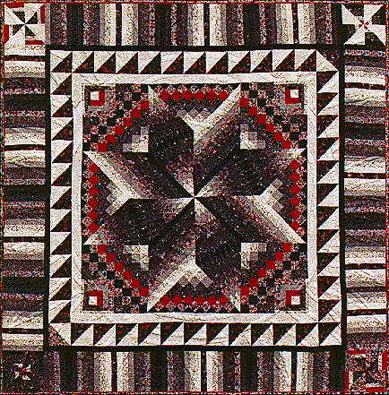

Rotary SamplerRotary Sampler
Rotary SamplerRotary Sampler
| #P109..........$7.95 71" X 71" Several years ago my Mother told me about a group of women at her church. They meet every Tuesday morning and make tied "quilts" for Lutheran World Relief. I joined them when my youngest son started school. They pretty much kept to squares and rectangles (they go together quickly)and wanted to add a little excitement to their quilts. I designed Rotary Sampler as a class to teach them rotary cutting and speed piecing techniques. Now they incorporate the techniques from Rotary Sampler in their quilts with wonderful results. |
 Copyright 1995, Jane L. Kakaley |